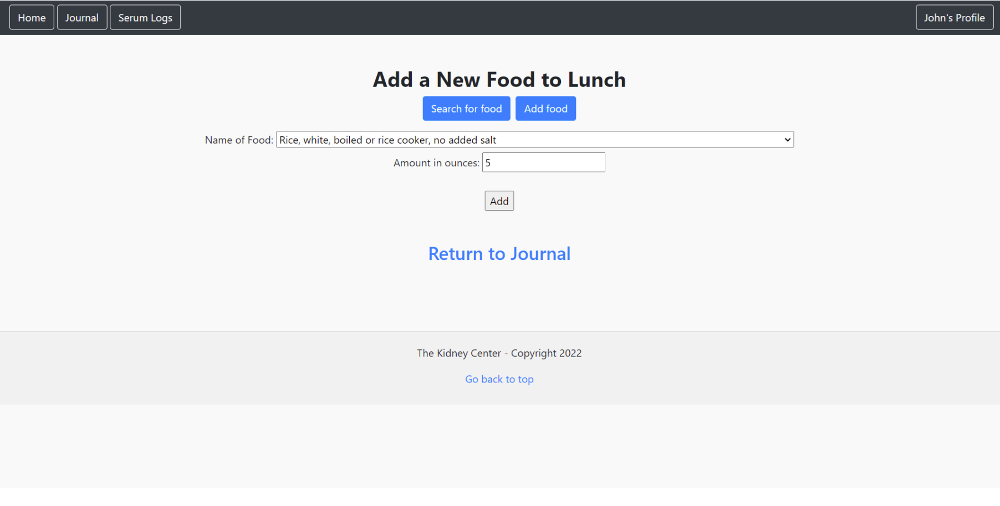
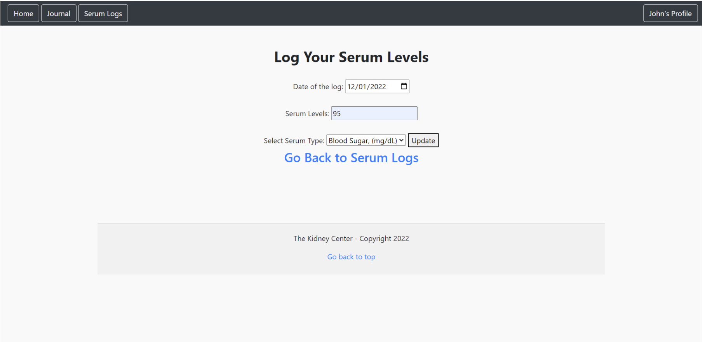

Hey there! My name is Bruyn Decker, and I am a junior at Brigham Young University (BYU) majoring in Information Systems at the Marriott School of Business. I have lived all over the country and have had the opportunity to experience different cultures and lifestyles. I love to explore and learn new things, which is why I am drawn to the ever-evolving field of technology.
My skills include proficiency in Python, Django, PostgreSQL, HTML, CSS, Javascript (including Node/Express), Git, and Microsoft Office Suite, as well as experience with ERD diagrams, UML, Microsoft Excel (including automation and statistics), C++, C# (including ASP.net MVC web applications), and SQL programming language.
Aside from my academic pursuits, I am a fitness enthusiast, a hiking addict, a baseball fanatic, and a movie buff. I love being outdoors and staying active, but I also enjoy writing and designing, which I find helps me to express my creativity and channel my passions into something productive.
Projects I've worked on
INTEX 2022
Was part of a team in which we designed a relational database, deployed it using Django and PostgreSQL, and visualized the data dynamically on a webpage to help kidney patients track health information.



SAnD 2022 (Systems Analysis and Design)
We analyzed a real-world business problem with an information system and proposed feasible business solutions. We proposed a solution to problems with BYU on-campus housing's incident reporting system. To complete this project I had to have a robust understanding of analysis and design processes, requirements elicitation, database design principles, and UML.
Principles of Business Programming- Final Project
Source Code for our web app on GitHub
For our final project we built a website that implemented CRUD (create, read, update, and delete) operations on a PostgreSQL database deployed to railway. The website was built using Python/Django along with HTML/CSS. This project required knowledge of principles of both front-end and back-end development. Our project recieved the highest grade in the class!